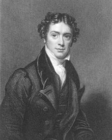

Michael Faraday Biografía
29-05-2023
Michael Faraday fue un importante físico y químico inglés. Nació el día 22 de septiembre de 1791 en Newington y murió el día 25 de agosto de 1867 en Londres.

Michael Faraday de Joven
Michael Faraday nació en una familia humilde el 22 de septiembre de 1791 en Newington Butts, ahora parte del distrito londinense de Southwark, pero entonces un suburbio de Surrey. Faraday solo pudo obtener la educación escolar más básica por razones económicas.
Fue aprendiz de encuadernador a la edad de catorce años. Comenzó a ampliar sus conocimientos leyendo los libros con los que trabajaba.
Faraday se casó con Sarah Barnard (1800-1879) el 12 de junio de 1821
Estos son algunos de los méritos obtenidos a lo largo de su vida:
- La Universidad de Oxford otorgó a Faraday un título honorario de Doctor en Derecho Civil (1832).
- Miembro de la Royal Society en 1824. En dos ocasiones rechazó la presidencia.
- Primer profesor de química en la Royal Institution (1833).
- Miembro honorario extranjero de la Academia Estadounidense de Artes y Ciencias (1832).
- Miembro extranjero de la Real Academia Sueca de Ciencias en 1838.
- Fue uno de los ocho miembros extranjeros elegidos para la Academia Francesa de Ciencias (1844).
- Miembro asociado del Real Instituto de los Países Bajos (1849) y más tarde se convirtió en miembro extranjero.
Comentarios (0)